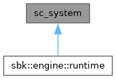

|
Sound Bakery
Open-source audio middleware for games
|
|
Sound Bakery
Open-source audio middleware for games
|
Object that manages the node graph, sounds, output etc. More...
#include <sound_chef.h>


Public Member Functions | |
| MA_ATOMIC (8, sc_atomic_uint64) clock | |
Public Attributes | |
| ma_engine | engine |
| ma_resource_manager | resourceManager |
| ma_log | log |
| clap_host_t | clapHost |
| sc_clap * | clapPlugins |
| ma_uint32 | clapPluginCount |
| float | clapPluginScratch [SC_MAX_CHANNELS][SC_MAX_FRAME_COUNT] |
| float * | clapPluginChannels [SC_MAX_CHANNELS] |
| sc_node_group * | masterNodeGroup |
| const sc_dsp_description * | userDspRegistry [SC_MAX_USER_DSP_TYPES] |
| ma_slot_allocator | voiceSlotAllocator |
| sc_voice * | voiceBuffer |
| ma_slot_allocator | realVoiceSlotAllocator |
| sc_real_voice * | realVoiceBuffer |
| sc_uint64 | callbackIndex |
| float | vol0Threshold |
| sc_voice_tiebreak_policy | tiebreakerPolicy |
| sc_virtual_voice_candidate * | virtualizeCandidates |
| sc_virtual_voice_candidate * | virtualizeBoundary |
Object that manages the node graph, sounds, output etc.
The sc_system is a wrapper for the ma_engine from miniaudio. This means that sc_system has a node graph, resource manager, can output to the user's audio device and everything expected from miniaudio's high-level API.
sc_system also holds and manages custom Sound Chef types like Node Groups.
Sound Chef allows for multiple system objects but it is likely unneeded as future versions will support multiple outputs.